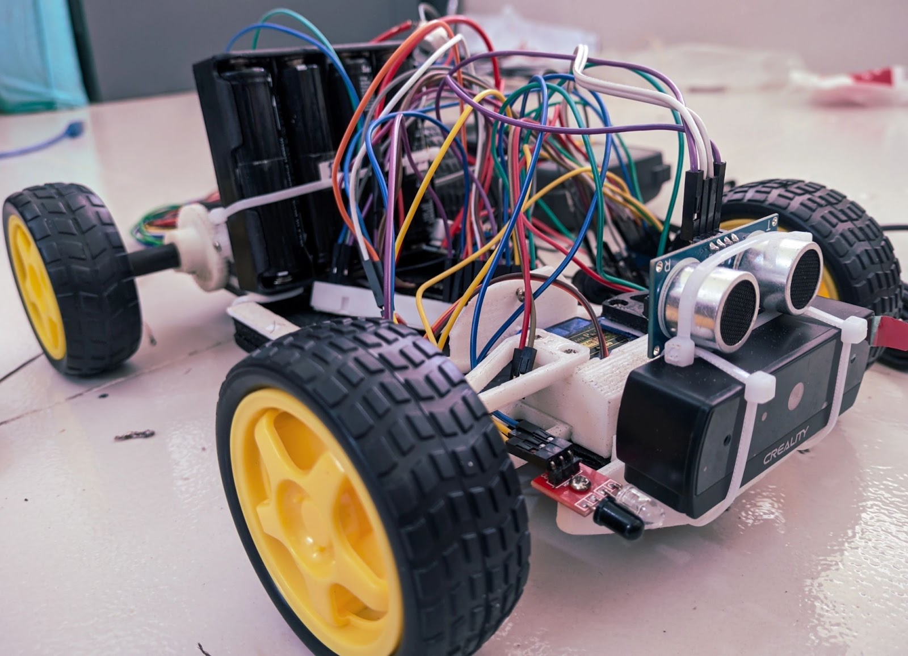
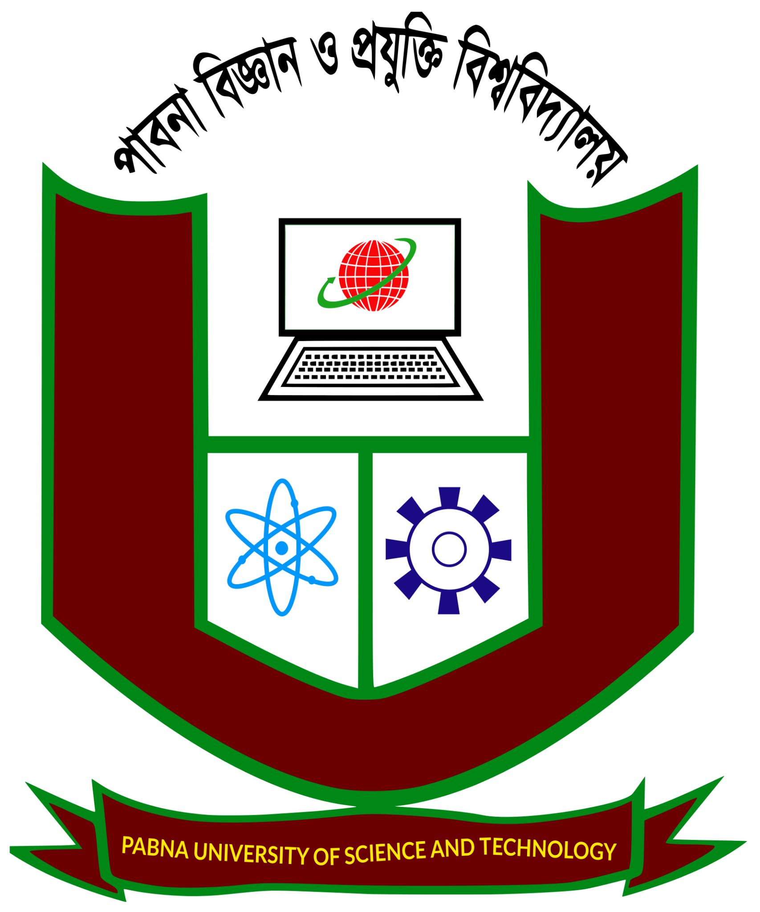
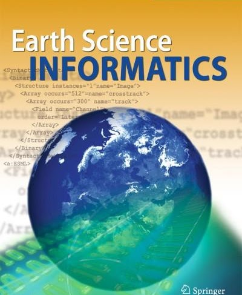

Experimental Systems & Robotics Projects
Hardware prototypes, physics simulation engines, multi-agent frameworks, and computational pipelines developed during undergraduate research at PUST.

Vision-Guided Autonomous Inspection Mobile Robot
Designed, 3D-modeled, and fabricated a physical rear-wheel drive mobile robotic platform featuring front-wheel Ackermann steering geometry. Integrated embedded microcontroller hardware with an onboard camera to execute real-time YOLOv8 edge structural defect detection and autonomous path tracking.
- Custom 3D-printed chassis engineered for balanced center-of-gravity and steering stability.
- Embedded microcontrollers interfacing high-torque steering servos with PWM motor control.
- Real-time edge computer vision inference for surface crack identification.

Neuromech-Sim: OpenSim Python Biomechanical Simulation Pipeline
An automated computational physics pipeline interfacing Python directly with Stanford University's OpenSim musculoskeletal simulation engine. Formulated an inverse neuromuscular modeling protocol over a 45,445-sample synthetic dynamic gait dataset to predict latent motor reflex delays.
- Direct Python C-bindings communicating with OpenSim kinematic and dynamic solver.
- Automated generation of 45,445 gait trials with parameterized muscular activation delays.
- Machine learning regression achieving high delay prediction fidelity (R² > 0.98) with SHAP interpretability.
GeoMind Core: Multi-Agent Geospatial Reasoning Engine
An autonomous cooperative LLM multi-agent framework designed for verified spatial query execution and automated remote sensing analysis. Combines planning agents, code synthesis agents, and verification arbiters with a secure Python execution sandbox.
- Autonomous agent ensemble coordinating multi-spectral raster parsing with GeoPandas and GDAL.
- Iterative consensus verification protocol checking spatial topology constraints before code execution.
- Sandboxed Python execution environment preventing destructive geospatial operations.

DeepVision-Defect: High-Resolution Structural Damage Segmentation Benchmark
A modular computer vision benchmark implementing hybrid Vision Transformer (ViT-B32) and convolutional neural networks for fine-grained structural anomaly detection across complex post-disaster satellite imagery.
- Self-attention rollout visualization mapping global transformer token interactions to localized building footprints.
- Robust focal loss formulation overcoming severe class imbalance between intact and collapsed structures.
- 97.85% validation accuracy with high generalization across varying atmospheric conditions.